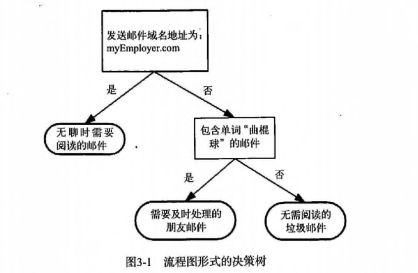
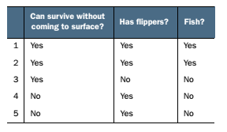

第3章 决策树
决策树 概述
决策树（Decision Tree）算法是一种基本的分类与回归方法，是最经常使用的数据挖掘算法之一。我们这章节只讨论用于分类的决策树。
决策树模型呈树形结构，在分类问题中，表示基于特征对实例进行分类的过程。它可以认为是 if-then 规则的集合，也可以认为是定义在特征空间与类空间上的条件概率分布。
决策树学习通常包括 3 个步骤：特征选择、决策树的生成和决策树的修剪。
决策树 场景
一个叫做 "二十个问题" 的游戏，游戏的规则很简单：参与游戏的一方在脑海中想某个事物，其他参与者向他提问，只允许提 20 个问题，问题的答案也只能用对或错回答。问问题的人通过推断分解，逐步缩小待猜测事物的范围，最后得到游戏的答案。
一个邮件分类系统，大致工作流程如下：

首先检测发送邮件域名地址。如果地址为 myEmployer.com, 则将其放在分类 "无聊时需要阅读的邮件"中。
如果邮件不是来自这个域名，则检测邮件内容里是否包含单词 "曲棍球" , 如果包含则将邮件归类到 "需要及时处理的朋友邮件",
如果不包含则将邮件归类到 "无需阅读的垃圾邮件" 。
决策树的定义：
分类决策树模型是一种描述对实例进行分类的树形结构。决策树由结点（node）和有向边（directed edge）组成。结点有两种类型：内部结点（internal node）和叶结点（leaf node）。内部结点表示一个特征或属性(features)，叶结点表示一个类(labels)。
用决策树对需要测试的实例进行分类：从根节点开始，对实例的某一特征进行测试，根据测试结果，将实例分配到其子结点；这时，每一个子结点对应着该特征的一个取值。如此递归地对实例进行测试并分配，直至达到叶结点。最后将实例分配到叶结点的类中。
决策树 原理
决策树 须知概念
信息熵 & 信息增益
熵（entropy）： 熵指的是体系的混乱的程度，在不同的学科中也有引申出的更为具体的定义，是各领域十分重要的参量。
信息论（information theory）中的熵（香农熵）： 是一种信息的度量方式，表示信息的混乱程度，也就是说：信息越有序，信息熵越低。例如：火柴有序放在火柴盒里，熵值很低，相反，熵值很高。
信息增益（information gain）： 在划分数据集前后信息发生的变化称为信息增益。
决策树 工作原理
如何构造一个决策树?
我们使用 createBranch() 方法，如下所示：
def createBranch():
'''
此处运用了迭代的思想。 感兴趣可以搜索 迭代 recursion， 甚至是 dynamic programing。
'''
检测数据集中的所有数据的分类标签是否相同:
If so return 类标签
Else:
寻找划分数据集的最好特征（划分之后信息熵最小，也就是信息增益最大的特征）
划分数据集
创建分支节点
for 每个划分的子集
调用函数 createBranch （创建分支的函数）并增加返回结果到分支节点中
return 分支节点
决策树 开发流程
收集数据：可以使用任何方法。
准备数据：树构造算法 (这里使用的是ID3算法，只适用于标称型数据，这就是为什么数值型数据必须离散化。 还有其他的树构造算法，比如CART)
分析数据：可以使用任何方法，构造树完成之后，我们应该检查图形是否符合预期。
训练算法：构造树的数据结构。
测试算法：使用训练好的树计算错误率。
使用算法：此步骤可以适用于任何监督学习任务，而使用决策树可以更好地理解数据的内在含义。
决策树 算法特点
优点：计算复杂度不高，输出结果易于理解，数据有缺失也能跑，可以处理不相关特征。
缺点：容易过拟合。
适用数据类型：数值型和标称型。
决策树 项目案例
项目案例1: 判定鱼类和非鱼类
项目概述
根据以下 2 个特征，将动物分成两类：鱼类和非鱼类。
特征： 1. 不浮出水面是否可以生存 2. 是否有脚蹼
开发流程
完整代码地址: https://github.com/apachecn/AiLearning/blob/master/src/py2.x/ml/3.DecisionTree/DecisionTree.py
收集数据：可以使用任何方法
准备数据：树构造算法（这里使用的是ID3算法，因此数值型数据必须离散化。）
分析数据：可以使用任何方法，构造树完成之后，我们可以将树画出来。
训练算法：构造树结构
测试算法：使用习得的决策树执行分类
使用算法：此步骤可以适用于任何监督学习任务，而使用决策树可以更好地理解数据的内在含义
收集数据：可以使用任何方法

我们利用 createDataSet() 函数输入数据
def createDataSet():
dataSet = [[1, 1, 'yes'],
[1, 1, 'yes'],
[1, 0, 'no'],
[0, 1, 'no'],
[0, 1, 'no']]
labels = ['no surfacing', 'flippers']
return dataSet, labels
准备数据：树构造算法
此处，由于我们输入的数据本身就是离散化数据，所以这一步就省略了。
分析数据：可以使用任何方法，构造树完成之后，我们可以将树画出来。

计算给定数据集的香农熵的函数
def calcShannonEnt(dataSet):
# 求list的长度，表示计算参与训练的数据量
numEntries = len(dataSet)
# 计算分类标签label出现的次数
labelCounts = {}
# the the number of unique elements and their occurrence
for featVec in dataSet:
# 将当前实例的标签存储，即每一行数据的最后一个数据代表的是标签
currentLabel = featVec[-1]
# 为所有可能的分类创建字典，如果当前的键值不存在，则扩展字典并将当前键值加入字典。每个键值都记录了当前类别出现的次数。
if currentLabel not in labelCounts.keys():
labelCounts[currentLabel] = 0
labelCounts[currentLabel] += 1
# 对于 label 标签的占比，求出 label 标签的香农熵
shannonEnt = 0.0
for key in labelCounts:
# 使用所有类标签的发生频率计算类别出现的概率。
prob = float(labelCounts[key])/numEntries
# 计算香农熵，以 2 为底求对数
shannonEnt -= prob * log(prob, 2)
return shannonEnt
按照给定特征划分数据集
将指定特征的特征值等于 value 的行剩下列作为子数据集。
def splitDataSet(dataSet, index, value):
"""splitDataSet(通过遍历dataSet数据集，求出index对应的colnum列的值为value的行)
就是依据index列进行分类，如果index列的数据等于 value的时候，就要将 index 划分到我们创建的新的数据集中
Args:
dataSet 数据集 待划分的数据集
index 表示每一行的index列 划分数据集的特征
value 表示index列对应的value值 需要返回的特征的值。
Returns:
index列为value的数据集【该数据集需要排除index列】
"""
retDataSet = []
for featVec in dataSet:
# index列为value的数据集【该数据集需要排除index列】
# 判断index列的值是否为value
if featVec[index] == value:
# chop out index used for splitting
# [:index]表示前index行，即若 index 为2，就是取 featVec 的前 index 行
reducedFeatVec = featVec[:index]
'''
请百度查询一下： extend和append的区别
music_media.append(object) 向列表中添加一个对象object
music_media.extend(sequence) 把一个序列seq的内容添加到列表中 (跟 += 在list运用类似， music_media += sequence)
1、使用append的时候，是将object看作一个对象，整体打包添加到music_media对象中。
2、使用extend的时候，是将sequence看作一个序列，将这个序列和music_media序列合并，并放在其后面。
music_media = []
music_media.extend([1,2,3])
print music_media
#结果：
#[1, 2, 3]
music_media.append([4,5,6])
print music_media
#结果：
#[1, 2, 3, [4, 5, 6]]
music_media.extend([7,8,9])
print music_media
#结果：
#[1, 2, 3, [4, 5, 6], 7, 8, 9]
'''
reducedFeatVec.extend(featVec[index+1:])
# [index+1:]表示从跳过 index 的 index+1行，取接下来的数据
# 收集结果值 index列为value的行【该行需要排除index列】
retDataSet.append(reducedFeatVec)
return retDataSet
选择最好的数据集划分方式
def chooseBestFeatureToSplit(dataSet):
"""chooseBestFeatureToSplit(选择最好的特征)
Args:
dataSet 数据集
Returns:
bestFeature 最优的特征列
"""
# 求第一行有多少列的 Feature, 最后一列是label列嘛
numFeatures = len(dataSet[0]) - 1
# 数据集的原始信息熵
baseEntropy = calcShannonEnt(dataSet)
# 最优的信息增益值, 和最优的Featurn编号
bestInfoGain, bestFeature = 0.0, -1
# iterate over all the features
for i in range(numFeatures):
# create a list of all the examples of this feature
# 获取对应的feature下的所有数据
featList = [example[i] for example in dataSet]
# get a set of unique values
# 获取剔重后的集合，使用set对list数据进行去重
uniqueVals = set(featList)
# 创建一个临时的信息熵
newEntropy = 0.0
# 遍历某一列的value集合，计算该列的信息熵
# 遍历当前特征中的所有唯一属性值，对每个唯一属性值划分一次数据集，计算数据集的新熵值，并对所有唯一特征值得到的熵求和。
for value in uniqueVals:
subDataSet = splitDataSet(dataSet, i, value)
# 计算概率
prob = len(subDataSet)/float(len(dataSet))
# 计算信息熵
newEntropy += prob * calcShannonEnt(subDataSet)
# gain[信息增益]: 划分数据集前后的信息变化， 获取信息熵最大的值
# 信息增益是熵的减少或者是数据无序度的减少。最后，比较所有特征中的信息增益，返回最好特征划分的索引值。
infoGain = baseEntropy - newEntropy
print 'infoGain=', infoGain, 'bestFeature=', i, baseEntropy, newEntropy
if (infoGain > bestInfoGain):
bestInfoGain = infoGain
bestFeature = i
return bestFeature
问：上面的 newEntropy 为什么是根据子集计算的呢？
答：因为我们在根据一个特征计算香农熵的时候，该特征的分类值是相同，这个特征这个分类的香农熵为 0；
这就是为什么计算新的香农熵的时候使用的是子集。
训练算法：构造树的数据结构
创建树的函数代码如下：
def createTree(dataSet, labels):
classList = [example[-1] for example in dataSet]
# 如果数据集的最后一列的第一个值出现的次数=整个集合的数量，也就说只有一个类别，就只直接返回结果就行
# 第一个停止条件：所有的类标签完全相同，则直接返回该类标签。
# count() 函数是统计括号中的值在list中出现的次数
if classList.count(classList[0]) == len(classList):
return classList[0]
# 如果数据集只有1列，那么最初出现label次数最多的一类，作为结果
# 第二个停止条件：使用完了所有特征，仍然不能将数据集划分成仅包含唯一类别的分组。
if len(dataSet[0]) == 1:
return majorityCnt(classList)
# 选择最优的列，得到最优列对应的label含义
bestFeat = chooseBestFeatureToSplit(dataSet)
# 获取label的名称
bestFeatLabel = labels[bestFeat]
# 初始化myTree
myTree = {bestFeatLabel: {}}
# 注：labels列表是可变对象，在PYTHON函数中作为参数时传址引用，能够被全局修改
# 所以这行代码导致函数外的同名变量被删除了元素，造成例句无法执行，提示'no surfacing' is not in list
del(labels[bestFeat])
# 取出最优列，然后它的branch做分类
featValues = [example[bestFeat] for example in dataSet]
uniqueVals = set(featValues)
for value in uniqueVals:
# 求出剩余的标签label
subLabels = labels[:]
# 遍历当前选择特征包含的所有属性值，在每个数据集划分上递归调用函数createTree()
myTree[bestFeatLabel][value] = createTree(splitDataSet(dataSet, bestFeat, value), subLabels)
# print 'myTree', value, myTree
return myTree
测试算法：使用决策树执行分类
def classify(inputTree, featLabels, testVec):
"""classify(给输入的节点，进行分类)
Args:
inputTree 决策树模型
featLabels Feature标签对应的名称
testVec 测试输入的数据
Returns:
classLabel 分类的结果值，需要映射label才能知道名称
"""
# 获取tree的根节点对于的key值
firstStr = inputTree.keys()[0]
# 通过key得到根节点对应的value
secondDict = inputTree[firstStr]
# 判断根节点名称获取根节点在label中的先后顺序，这样就知道输入的testVec怎么开始对照树来做分类
featIndex = featLabels.index(firstStr)
# 测试数据，找到根节点对应的label位置，也就知道从输入的数据的第几位来开始分类
key = testVec[featIndex]
valueOfFeat = secondDict[key]
print '+++', firstStr, 'xxx', secondDict, '---', key, '>>>', valueOfFeat
# 判断分枝是否结束: 判断valueOfFeat是否是dict类型
if isinstance(valueOfFeat, dict):
classLabel = classify(valueOfFeat, featLabels, testVec)
else:
classLabel = valueOfFeat
return classLabel
使用算法：此步骤可以适用于任何监督学习任务，而使用决策树可以更好地理解数据的内在含义。
项目案例2: 使用决策树预测隐形眼镜类型
完整代码地址: https://github.com/apachecn/AiLearning/blob/master/src/py2.x/ml/3.DecisionTree/DecisionTree.py
项目概述
隐形眼镜类型包括硬材质、软材质以及不适合佩戴隐形眼镜。我们需要使用决策树预测患者需要佩戴的隐形眼镜类型。
开发流程
- 收集数据: 提供的文本文件。
- 解析数据: 解析 tab 键分隔的数据行
- 分析数据: 快速检查数据，确保正确地解析数据内容，使用 createPlot() 函数绘制最终的树形图。
- 训练算法: 使用 createTree() 函数。
- 测试算法: 编写测试函数验证决策树可以正确分类给定的数据实例。
- 使用算法: 存储树的数据结构，以便下次使用时无需重新构造树。
收集数据：提供的文本文件
文本文件数据格式如下：
young myope no reduced no lenses
pre myope no reduced no lenses
presbyopic myope no reduced no lenses
解析数据：解析 tab 键分隔的数据行
lecses = [inst.strip().split('\t') for inst in fr.readlines()]
lensesLabels = ['age', 'prescript', 'astigmatic', 'tearRate']
分析数据：快速检查数据，确保正确地解析数据内容，使用 createPlot() 函数绘制最终的树形图。
>>> treePlotter.createPlot(lensesTree)
训练算法：使用 createTree() 函数
>>> lensesTree = trees.createTree(lenses, lensesLabels)
>>> lensesTree
{'tearRate': {'reduced': 'no lenses', 'normal': {'astigmatic':{'yes':
{'prescript':{'hyper':{'age':{'pre':'no lenses', 'presbyopic':
'no lenses', 'young':'hard'}}, 'myope':'hard'}}, 'no':{'age':{'pre':
'soft', 'presbyopic':{'prescript': {'hyper':'soft', 'myope':
'no lenses'}}, 'young':'soft'}}}}}
测试算法: 编写测试函数验证决策树可以正确分类给定的数据实例。
使用算法: 存储树的数据结构，以便下次使用时无需重新构造树。
使用 pickle 模块存储决策树
def storeTree(inputTree, filename):
import pickle
fw = open(filename, 'wb')
pickle.dump(inputTree, fw)
fw.close()
def grabTree(filename):
import pickle
fr = open(filename, 'rb')
return pickle.load(fr)
- 作者：片刻 小瑶
- GitHub地址: https://github.com/apachecn/AiLearning
- 版权声明：欢迎转载学习 => 请标注信息来源于 ApacheCN